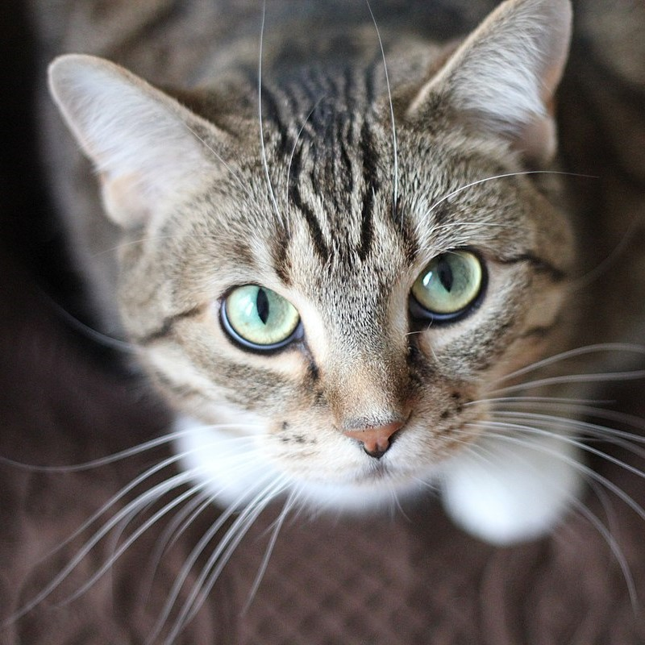
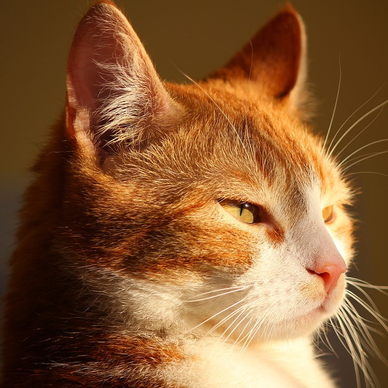
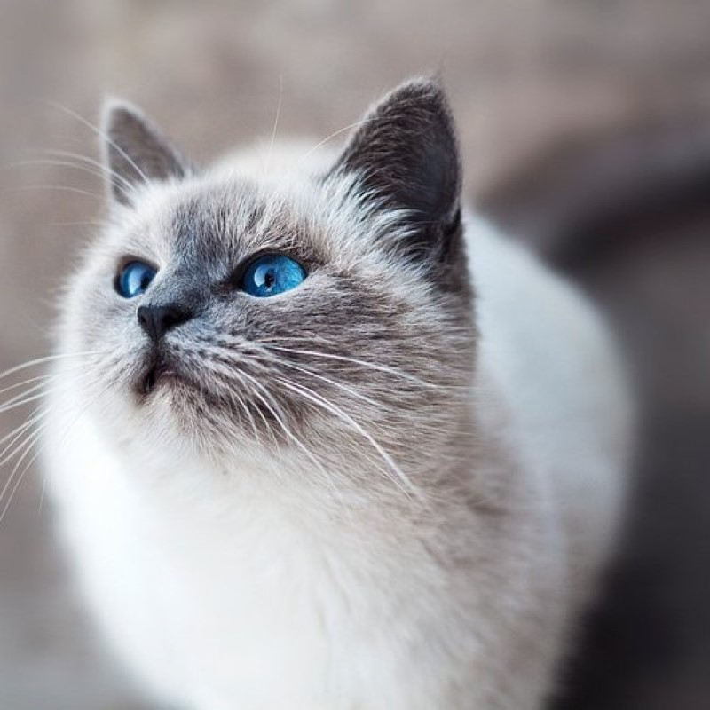
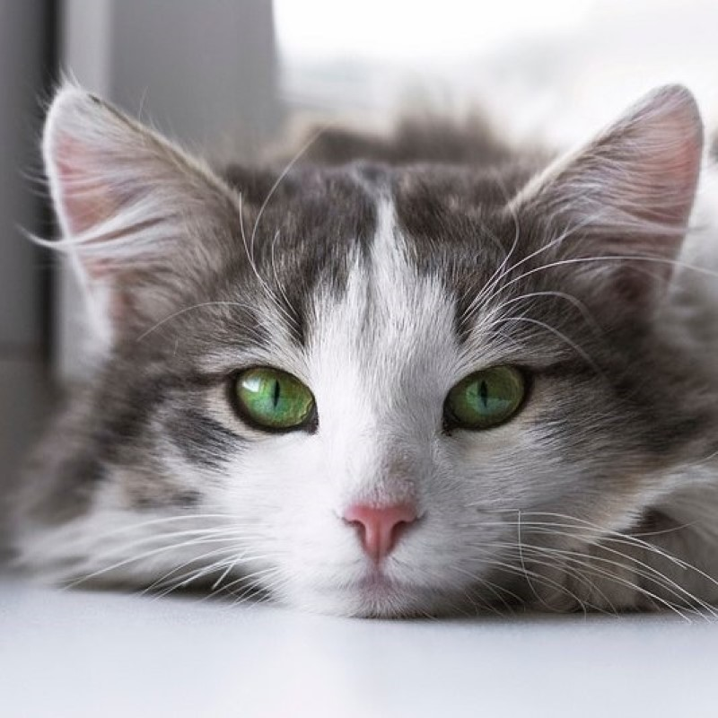

Join the community of cat lovers today to exchange cat pictures and gifs
Cat facts!

Whiskers are used by cats to sense their environment

Red cats shine under the sunlight

The Birman is a gray and white cat breed that simply adores company

Cats have excellent hearing
Cats and humans have been partners for over ten thousand years. And what you realize when you've lived with a
cat for a long time is that we may think we own them, but that's not the way it is. They simply allow us the
pleasure of their company.
-Genki Kawamura. If Cats Disappeared From The World